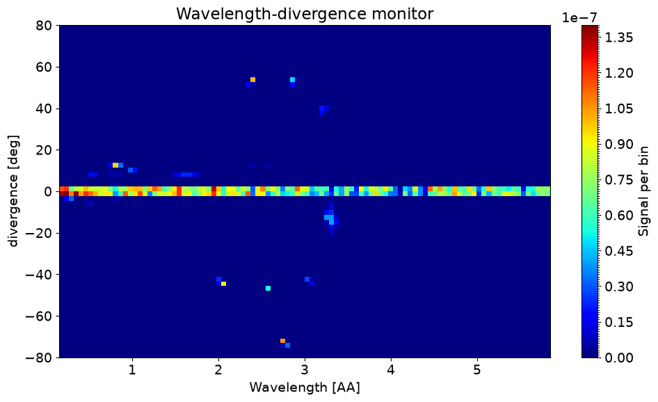
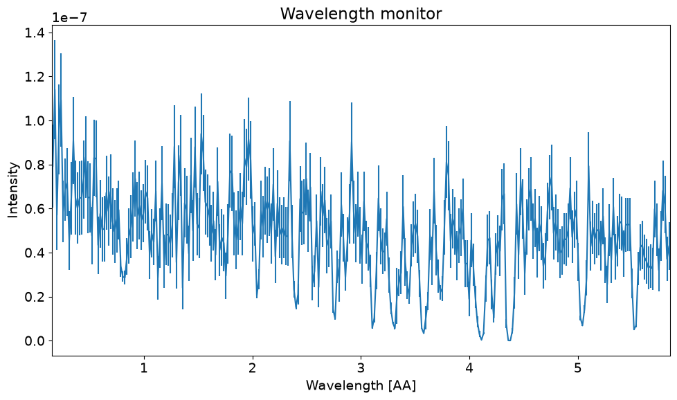
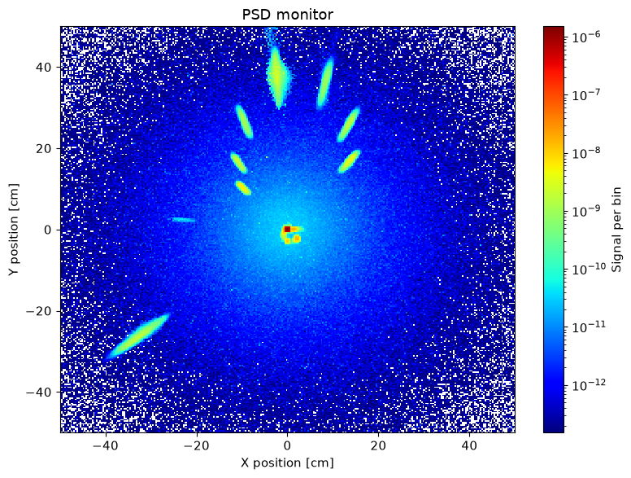
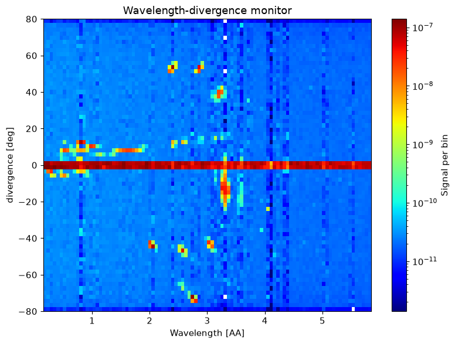
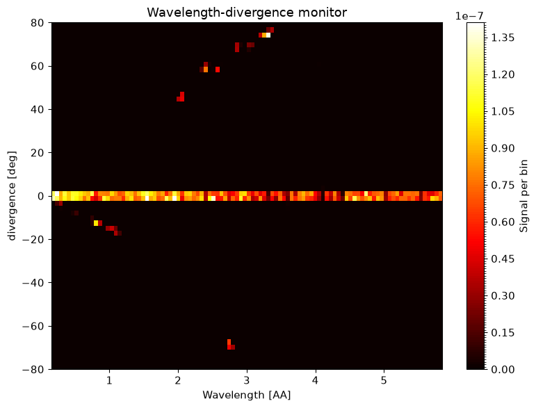
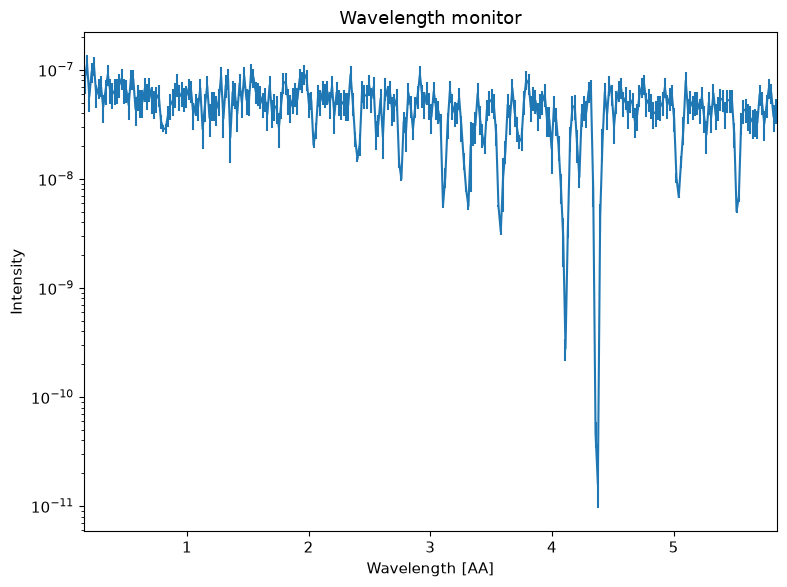

Functions#
McStasScritpt includes some freestanding functions located in the functions module.
import mcstasscript as ms
import laue_example
data = laue_example.create_data("data_for_loading")
data_path = data[0].get_data_location()
load_data function#
The load_data function reads a McStas dataset from disk and returns it in the form of McStasData and McStasDataEvent objects in a list. The input is the path to the folder containing the McStas data. The path can be absolute or relative. Here the path from the generated example data is used.
loaded_data = ms.load_data(data_path)
print(loaded_data)
[
McStasData: PSD type: 2D I:1.60013e-05 E:2.16617e-07 N:2609460.0,
McStasData: div_lambda_h type: 2D I:1.60013e-05 E:2.16617e-07 N:2609460.0,
McStasData: div_lambda_v type: 2D I:1.60013e-05 E:2.16617e-07 N:2609460.0,
McStasData: lambda type: 1D I:1.43711e-05 E:2.16372e-07 N:261196.0]
The load_data function provides a way to work with data not created in the current session or created without McStasScript.
name_search#
The name_search function searches a list of data for instances that match a monitor name or a filename. If a monitor creates more than one dataset, name_search may return multiple data objects.
Here a search for the component name is performed.
div_lambda_h = ms.name_search("div_lambda_h", data)
print(div_lambda_h)
McStasData: div_lambda_h type: 2D I:1.60013e-05 E:2.16617e-07 N:2609460.0
ms.make_plot(div_lambda_h, fontsize=14, figsize=(10, 6))

It is also possible to search for the name of the datafile.
transmission = ms.name_search("lambda_transmission.dat", data)
ms.make_plot(transmission, fontsize=14, figsize=(10, 6))

name_plot_options#
The name_plot_options function combines a search with name_search and a call to its set_plot_options. Setting plot options changes how the data will be plotted, and this provides a nice way to control one plot per line in a neat manner.
ms.name_plot_options("PSD", data, log=True, orders_of_mag=7)
ms.name_plot_options("div_lambda_h", data, log=True, orders_of_mag=5)
ms.name_plot_options("div_lambda_v", data, log=False, colormap="hot")
ms.name_plot_options("lambda", data, log=True)
ms.make_plot(data, figsize=(8, 6))



